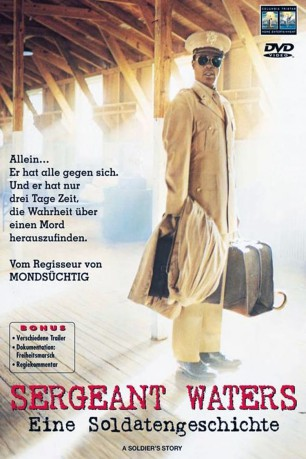
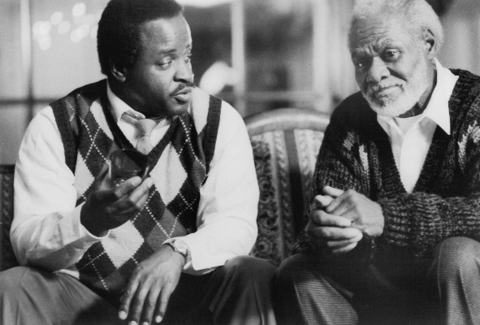
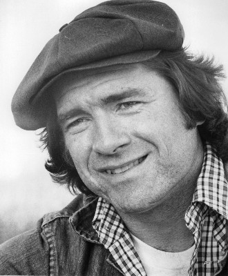

#9893 Sergeant Waters - Eine Soldatengeschichte
Alternativ: A Soldier's Story
Auszeichnungen: für 3 Oscars nominiert
 
 IMDB-Wertung: 7.2 / 10
IMDB-Wertung: 7.2 / 10  Metascore: 0
Metascore: 0 
Louisiana 1944: Mitte in der Nacht wird der farbige Soldat Sergeant Waters erschossen. Militäranwalt Captain Davenport erhält den Auftrag den Fall zu übernehmen. Er wird in das Infanteriecamp farbiger Soldaten geschickt, um den Tod des Sergeants aufzuklären. Da auch er ein Farbiger ist und die Offiziere Weiße sind schlägt ihm viel Mißgunst entgegen. Auch bleiben ihm nur drei Tage um die wahren Hintergründe des Mordes aufzudecken und den Täter zu finden....
Jahr: 1984
Dauer: 100 Minuten
FSK: 12
Land: USA Studio: Columbia Pictures CorporationTonspuren: DD2.0 - ,
Untertitel: Englisch,
Auflösung: 1080p (1920x1040) Größe: 6850 MB
Genre: Drama, Krieg, Krimi, Mystery
Regisseur:  Norman Jewison
Norman Jewison
Drehbuch: Charles Fuller, Charles Fuller
Soundtrack: Herbie Hancock
Darsteller:
- Howard E. Rollins Jr. als Captain Davenport
- Adolph Caesar als Sergeant Waters
-  Art Evans als Private Wilkie
 David Alan Grier als Corporal Cobb
David Alan Grier als Corporal Cobb- David Harris als Private Smalls
 Dennis Lipscomb als Captain Taylor
Dennis Lipscomb als Captain Taylor- Larry Riley als C.J. Memphis
- Robert Townsend als Corporal Ellis
 Denzel Washington als Private First Class Peterson
Denzel Washington als Private First Class Peterson- William Allen Young als Private Henson
- Patti LaBelle als Big Mary
- Wings Hauser als Lieutenant Byrd
- Scott Paulin als Captain Wilcox
 John Hancock als Sergeant Washington
John Hancock als Sergeant Washington-  Trey Wilson als Colonel Nivens
- Vaughn Reeves als Captain Estes
- Michael Anthony Williams als Barracks Soldier
- Bobby McGee als Barracks Soldier
- Rick Ramey als Barracks Soldier
- Patricia Brandkamp als Ida Nivens
- Carl Dreher als Bus driver
- Robert Tyler als Private Seymour
- Pat Grabe als White Lieutenant #1
- Terry Dodd als White Lieutenant #2
- Warren Clements als Sergeant Hooks
- James W. Bryant als Chaplain
- John Valentine als Umpire
- Ronald E. Greenfield als M.P. Sergeant
- Anthony C. Sanders als M.P. at Gate
- Traftin E. Thompson als M.P. in Barracks
- Roy Wells als Training Field Sergeant
- Tommy G. Liggins als Soldier Painting
- Calvin Franklin als Barracks Soldier
- Kevin T. Mosley als Barracks Soldier
- David Ashley als Barracks Soldier
- Thomas Howard als Barracks Soldier
- Lacarnist Hiriams als Barracks Soldier
Datei: X:\1984\Sergeant Waters - Eine Soldatengeschichte (1984, FSK12, 1920x1040).mkv seit 08.11.2018
Festplatte: HD 1980-1986
 Es gibt insgesamt 46 Filme in der Gruppe '1984'
Es gibt insgesamt 46 Filme in der Gruppe '1984'